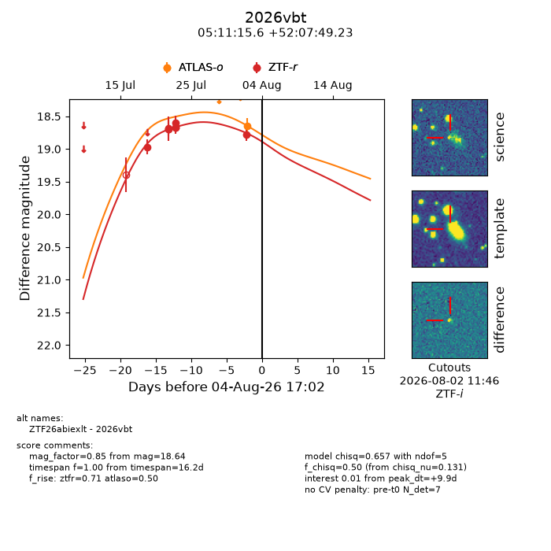
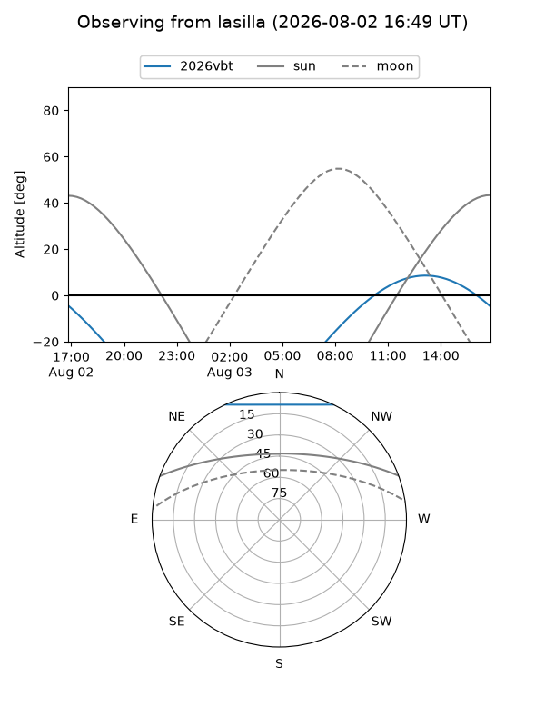
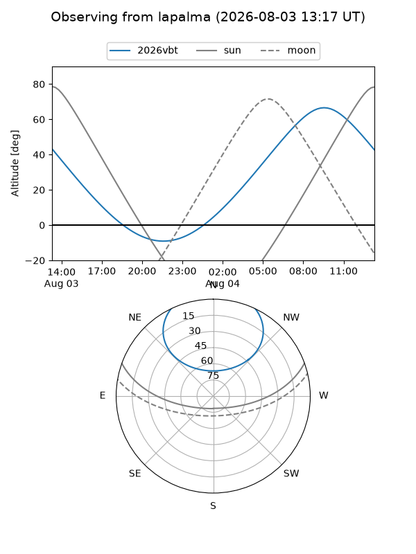
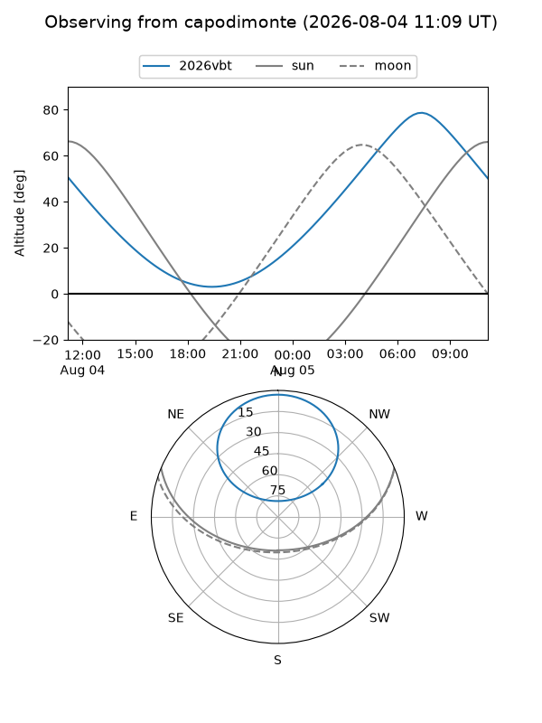
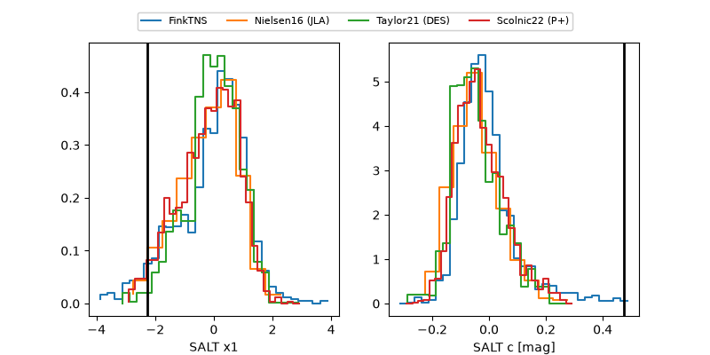

2026vbt
Target 2026vbt at 2026-08-04 17:04
Aliases and brokers:
FINK-ZTF: ztf.fink-portal.org/ZTF26abiexlt
Lasair-ZTF: lasair-ztf.lsst.ac.uk/objects/ZTF26abiexlt
ALeRCE-ZTF: alerce.online/object/ZTF26abiexlt
YSE-PZ: ziggy.ucolick.org/yse/transient_detail/2026vbt
TNS name: wis-tns.org/object/2026vbt
Direct TNS query: direct search
alt names
ZTF26abiexlt (ztf,fink_ztf)
2026vbt (tns,yse)
Coordinates:
equatorial (ra, dec) = 77.8148,+52.13034
equatorial (HMS+DMS) = 05:11:15.55,+52:07:49.23
galactic (l, b) = (157.0439,+7.39337)
Flags:
TNS type: nan
peak dt: +9.9
Photometry:
last atlaso=18.64, ztfr=18.77
1 atlaso, 8 ztfr detections
Lightcurve

Visibility



Additional plots
